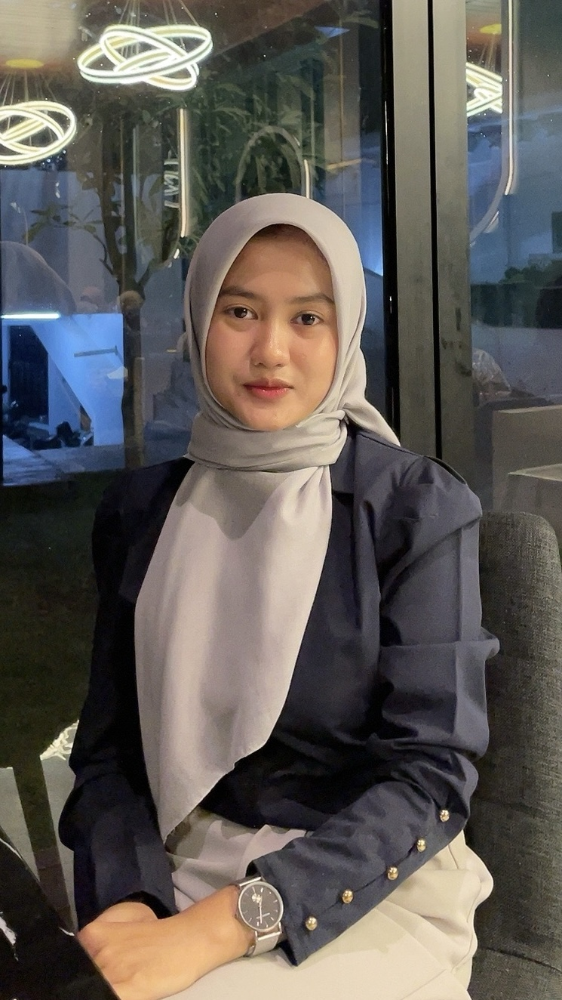

Hai, salam kenal ! 👋
Perkenalkan, nama saya adalah Talitha Nur Sabia, mahasiswa Semester 6 Program Studi D4 Manajemen Informasi Kesehatan di Universitas Gadjah Mada. Saat ini saya fokus mengembangkan keterampilan manajerial dan kemampuan pemecahan masalah, serta memperdalam pengetahuan saya dalam manajemen informasi kesehatan. Dengan pengalaman kerja di bidang rekam medis, saya siap berkontribusi dalam meningkatkan efisiensi dan kualitas pelayanan kesehatan melalui pengelolaan data yang lebih baik.
